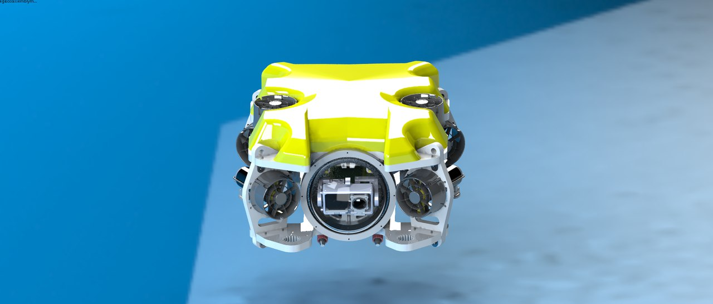
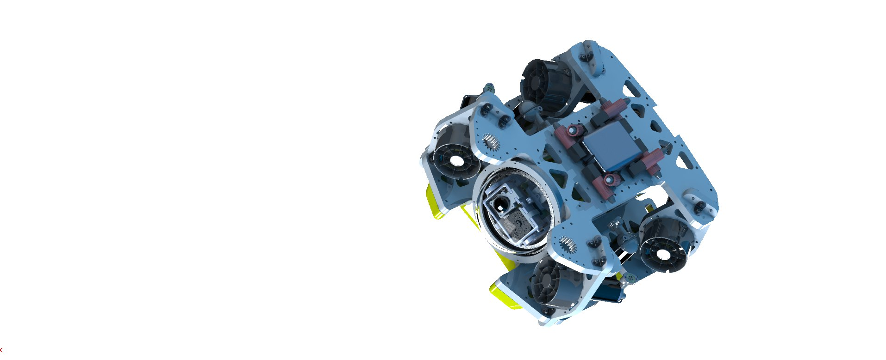

Телеуправляемый необитаемый подводный аппарат «Око»
Состав ТНПА:
1) ТНПА
2) Кабельная система (КС)
3) Надводный модуль (НМ)
4) Набор инструментов и приспособлений.
ТНПА представляет собой подводную подвижную телеуправляемую роботизированную платформу, маневрирующую под управлением оператора и обеспечивающую передачу на берег видео- и гидроакустической информации, информации с иной носимой измерительной аппаратуры и выполнение простых механических операций таких как подъем на поверхность мелких объектов. Основные технико-экономические характеристики ТНПА представлены в таблице 1.
Основные технические характеристики ТНПА
Таблица 1
Характеристика | Значение | Размерность |
Габаритные размеры | 550 х 500 х 400 | мм |
Масса | не более 35 | кг |
Плавучесть | Нейтральная | - |
Суммарный упор по вертикали | 5..8 | кгс |
Суммарный упор по маршу | 8,5..13,6 | кгс |
Суммарный упор по лагу | 5..8 | кгс |
Максимальная скорость погружения | не менее 1,5..2,5 | м/с |
Максимальная крейсерская скорость | не менее 1..1,7 | м/с |
Максимальная скорость по лагу | не менее 0,7..1 | м/с |
Максимально допустимая глубина погружения | не менее 150 | м |
Грузоподъемность | 2 | кг |
Напряжение питания | 220 АС | В |
Потребляемая электрическая мощность | не более 3000 | Вт |
Система технического зрения | 1..2 аналоговые камеры, формат AHD, 1920x1080, realtime/1..2 цифровые камеры USB 3.0, 1600x1200, fps60 | - |
Датчики | Глубины, крена, дифферента, курса (в режиме гиро азимута) | - |
Порты расширения для дополнительных устройств | 1..4 | - |
Кабельная система (КС) предназначена для обеспечения электропитания, управления и получения данных с ТНПА с помощью кабель - троса, а также для хранения, транспортировки, развертывания и свертывания кабель – троса.
Основные технические характеристики КС
Таблица 2
Характеристика | Значение | Размерность |
Габаритные размеры | 550х500х400 | мм |
Масса | не более 20 | кг |
Длина кабеля | 200 | м |
Вес кабеля в воде | не более 0..0.09 | кгс/м |
Диаметр кабеля | не более 7.4..15 | мм |
Потери мощности в кабеле | не более 400 | Вт |
Надводный модуль (НМ) представляет собой аппаратуру управления и питания ТНПА, его основные технические характеристики представлены в таблице 3.
Основные ориентировочные технико-экономические характеристики НМ
Таблица 3
Характеристика | Значение | Размерность |
Габаритные размеры | 550х450х300 | мм |
Масса | не более 20 | кг |
Характеристики, заданные диапазонами в таблицах 1..3 определяются различными вариантами выбора отдельных компонентов системы, определяемыми Заказчиком.

ТНПА «Око». Вид спереди
ТНПА «Око». Вид снизу
ТНПА может быть оборудован следующими дополнительными устройствами
· Гидролокатор кругового или бокового обзора
· Дополнительные подводные светильники
· Дополнительные подводные видеокамеры
· Манипулятор (схват)